PROJECTS
Проект - Derabot Github
През април 2024 г. стартирах проект, наречен „Derabot“, с моите съученици Радослав Митов и Димитър Илиев. Целта ни е да създадем роботизирана система, способна да рисува върху различни повърхности.
Основни характеристики
- Многостранно рисуване: Derabot се адаптира към различни повърхности, подходящ за класни стаи, стени и платна.
- Бързо закрепване: Закрепва се сигурно с две вакуумни скоби за по-малко от две минути.
- Удобно управление: Работи чрез мобилен графичен потребителски интерфейс (GUI) за лесно управление от смартфон.
Бъдещи приложения
- Образование: За визуални помощни средства и интерактивно рисуване.
- Строителство: За маркировка и художествени подобрения.
- Артистични проекти: За съвместни инсталации и обществени проекти.
* Забележка: Кодът за проекта в GitHub е взаимстван от проекта на "Andy wise" - Drawbot, макар и значително променен поради различни части.
 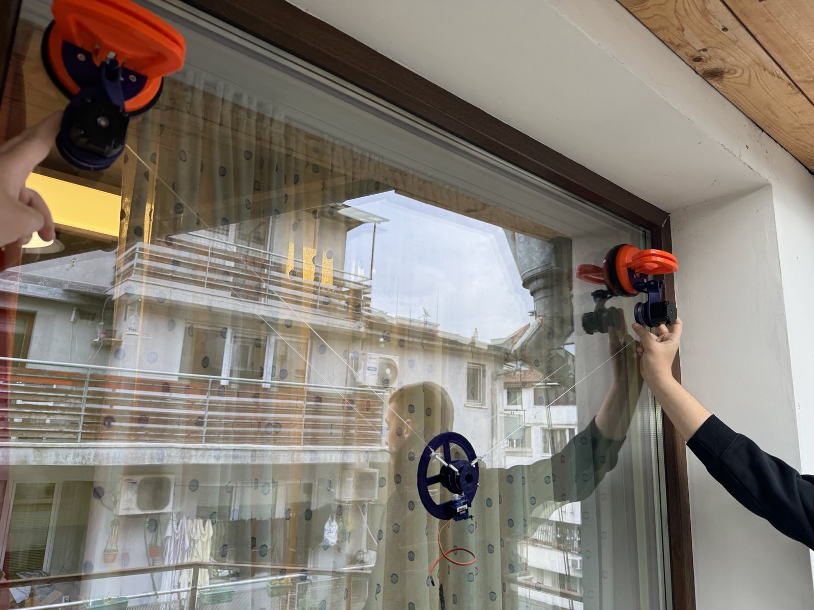
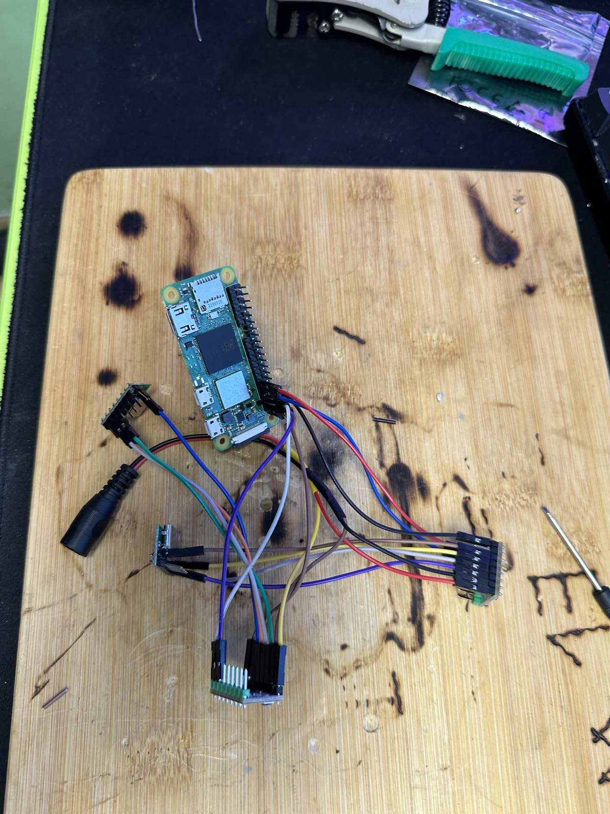
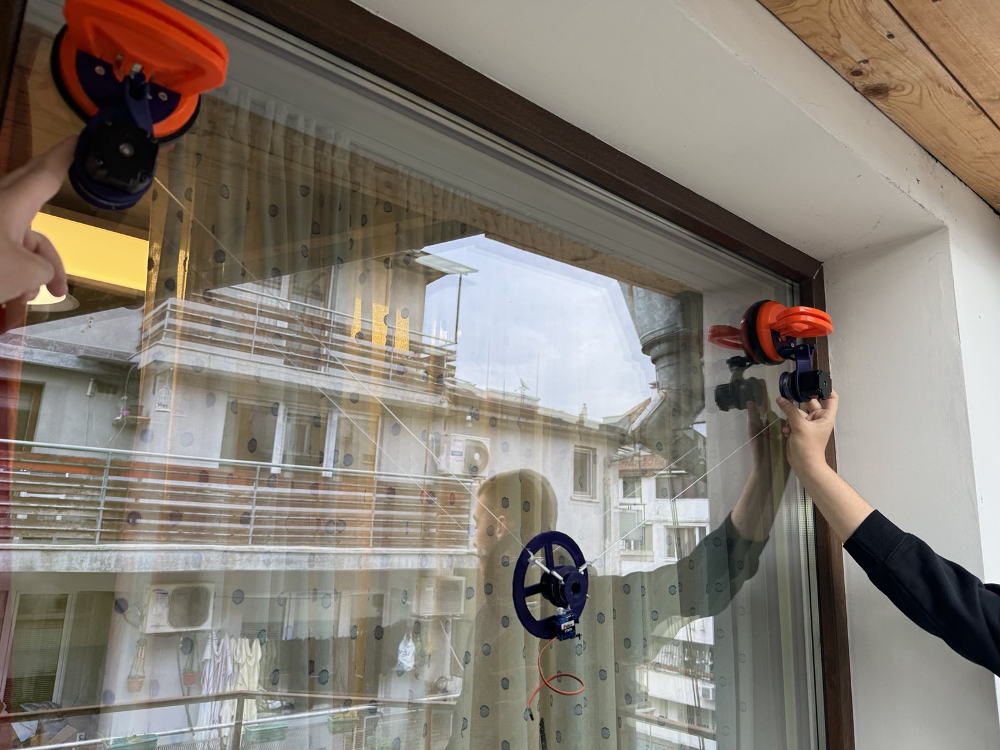
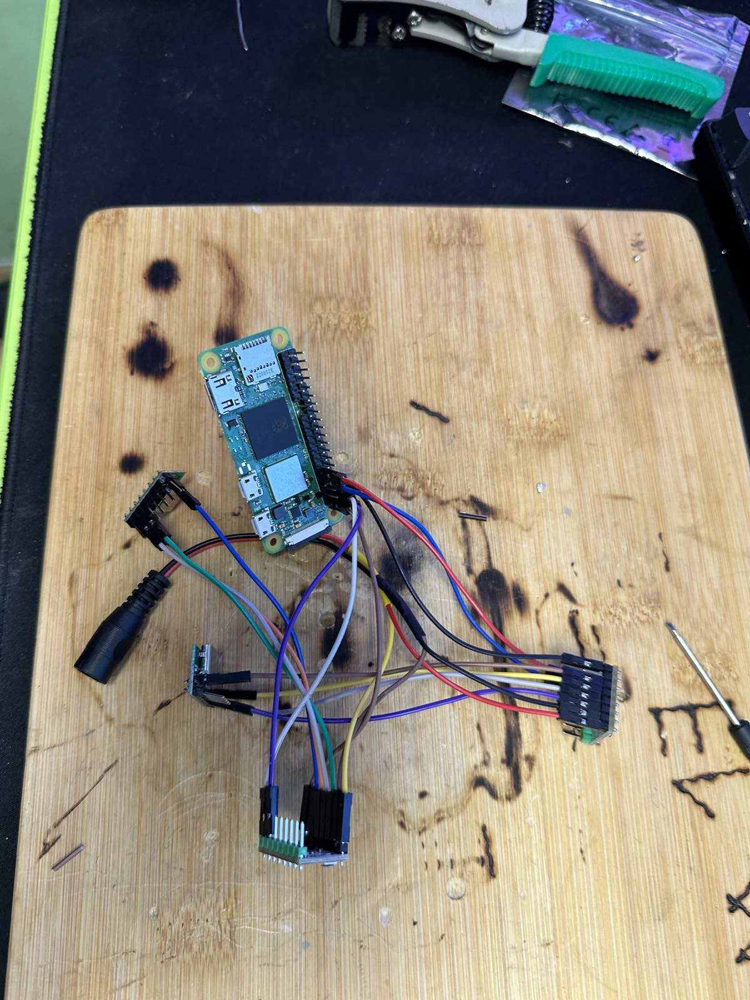
Проект - Kickhubbg.com
Започнах да разработвам Kickhub Bulgaria през Януари 2023. От тогава аз и екипа сме обслужили над 300 доволни клиента. Целта ни е всеки да има достъп до любимите му обувки, но на по-достъпни цени.

Проект - 3D Printing Journey
📦 Anet A8 (ноември 2019 – лято 2021)
Първият ми принтер беше Anet A8 – взех го чрез размяна срещу high-end RC кола, когато бях едва на 11. Беше просто комплект от части – всичко трябваше да се сглобява от нулата, а интерфейсът беше трагичен. Повечето неща не ставаха, но това ме научи на търпение, ровене по форуми и първите крачки в FDM света. За възрастта си и липсата на опит, направих каквото можах.
 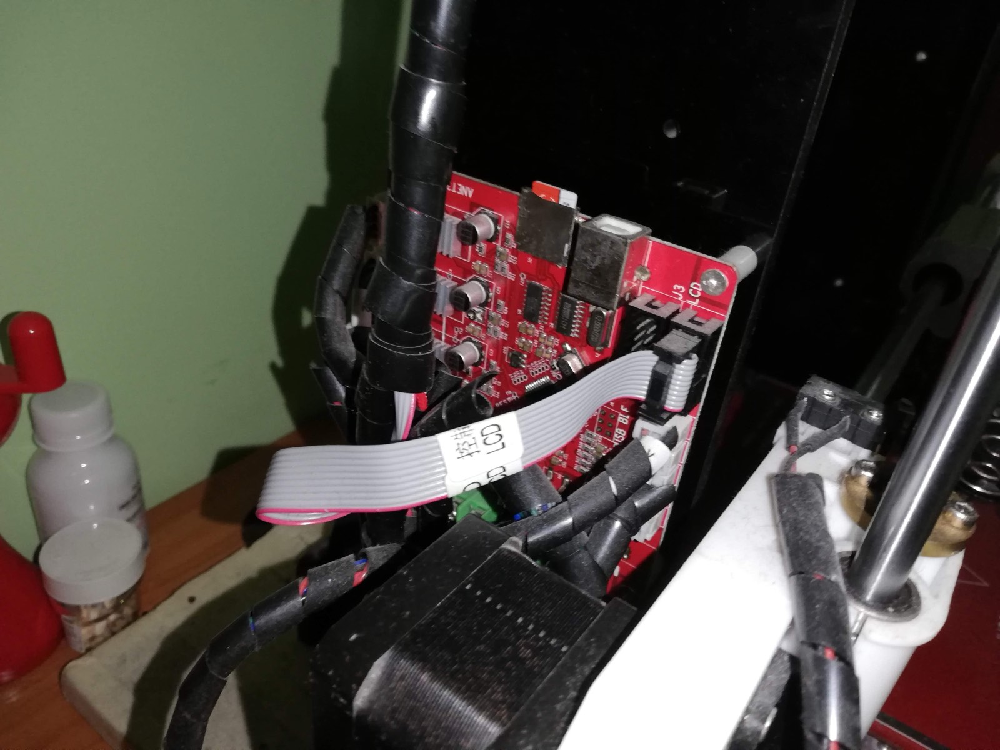
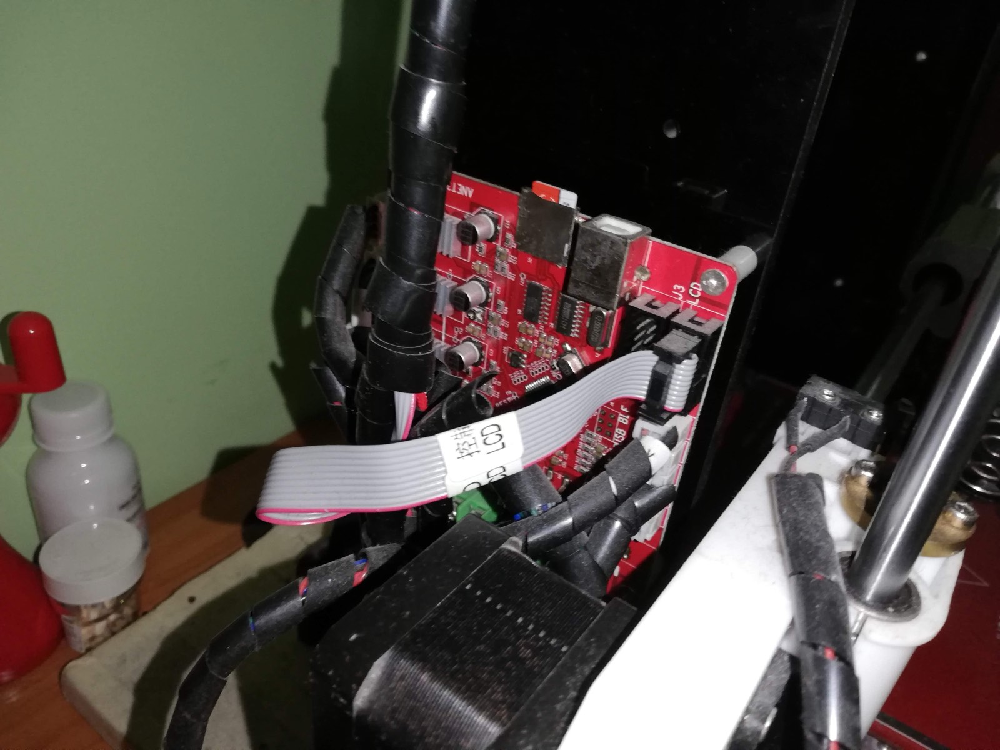
🛠️ BIQU B1 (декември 2021 – януари 2025)
След като продадох Anet-а, минах на чисто нов BIQU B1 – и това беше ден и нощ. Всичко работеше, и за първи път можех да отпечатвам реално използваеми неща. Печатах много – части за хобита, подаръци, дори пробвах 3D моделиране в Tinkercad (в началото не много успешно). Това беше работният ми принтер с най-много отпечатани часове и реални резултати.

⚙️ Ender 3 Neo с Klipper (декември 2024 – февруари 2025)
Около Коледа 2024 реших, че е време да сбъдна една стара мечта – да си направя бърз Klipper-базиран принтер. Намерих евтин Creality Ender 3 Neo, който не работеше. Използвах Raspberry Pi Zero 2W от проекта DeraBot, качих му Mainsail, което си беше предизвикателство за мен, и продължих оттам.
- 🔧 Hotend: Phaetus Dragonfly
- 🌀 Direct drive: временно със стоковия екструдер
- 🔩 Механика: Dual Z, PEI bed, подсилени мотори
- 🧠 Електроника: BTT SKR Mini E3 V3 + TMC2209
- 🔌 PSU: по-мощно захранване
- 🧊 Кулер системи: custom-designed от мен в Tinkercad
Създадох собствено Klipper macro за high-speed motion тест. Имам видео от теста – изглежда доста сериозно. А най-впечатляващото: успях да направя Benchy за 25 минути. В крайна сметка машината се доближаваше до high-end принтери като поведение. След цялото модване, продадох го на печалба.
 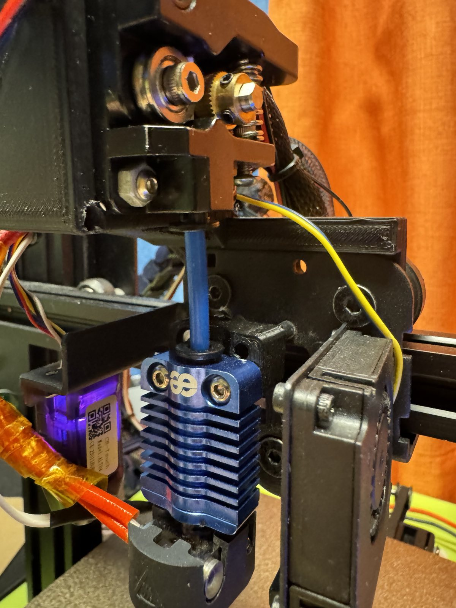
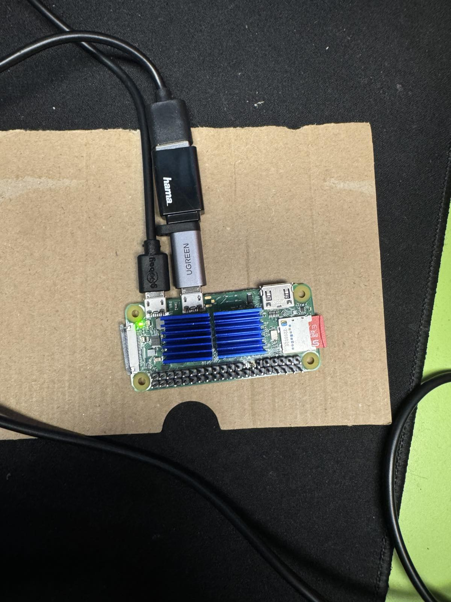
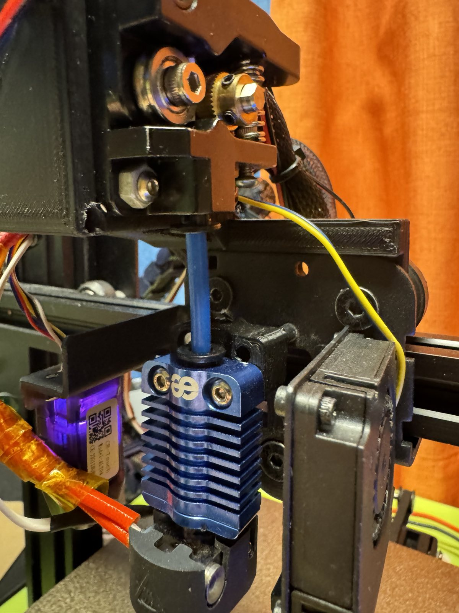
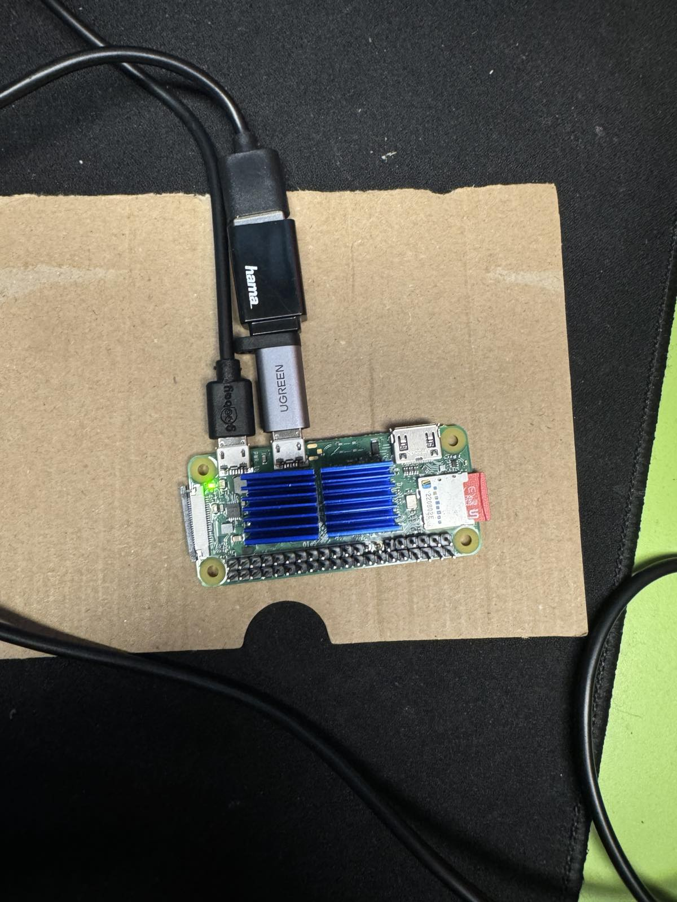
⚡ Bambu Lab P1P с AMS (февруари 2025 – до днес)
След Ender-а търсех нещо, което да оправя и продам за печалба, но попаднах на обява за Bambu Lab P1P с AMS и custom enclosure за 1400 лв. Свалих я на само 1100 лв и го взех още на следващия ден. Беше гейм чейнджър.
Bambu Lab-а просто беше в друга категория – автоматични калибрации и нула проблеми. Интерфейсът беше като от бъдещето, AMS-ът сменяше филаментите автоматично, скоростта и качеството бяха несравними. В този момент разбрах, че не искам да си губя времето с експерименти – и продадох BIQU B1, въпреки сантименталната стойност.
Най-важното е, че понеже не трябваше да се занимавам с настройки и ремонти, започнах да се уча сериозно на Autodesk Fusion 360. Самостоятелно стигнах до ниво, в което можех да правя доста сложни модели и дори направих части по поръчка за няколко човека. Това ми отвори нови възможности.

Проект - ⛏️ Ethereum Mining Rig
През февруари 2021 случайно попаднах на информация, че Ethereum набира сериозен ръст, а копаенето тепърва се засилва – точно преди световния GPU недостиг. Вече имах добра видеокарта (RTX 2070), така че си казах: „Изглежда лесно, защо да не опитам?“
Настроих Claymore Miner с Ethermine пул на личния си компютър. След няколко седмици вече бях изкарал над 150 лв. пасивно. Това ме вкара надълбоко – не просто в самото копаене, а в изграждането и оптимизирането на ригове. Вече имах опит със сглобяване и ъпгрейд на PC-та, но тук стана по-сериозно.
На 12 години събрах всичките си спестявания и от приятел на баща ми купих евтини части – дъно, процесор, RAM, и две захранвания. Едното използвах с paperclip trick, за да мога да добавя още видеокарти по-късно. Взех и дървена DIY рамка, както и една GTX 1070 втора ръка – толкова можех да си позволя тогава.
Ригът работеше денонощно в гаража, и да, плащах си тока сам – не го крадях от родителите ми 😅.
След известно време мигрирах системата към HiveOS – Linux-базирана професионална платформа за риг мениджмънт. Това беше огромен ъпгрейд:
- Следях хашрейта и температурите в реално време
- Прилагах BIOS модове и overclock/undervolt профили
- Работех с bash скриптове и автоматични рестарти при fail
- Настройвах рутер и локална мрежа за стабилна връзка
HiveOS ми даде практически опит в remote системна администрация и мрежова поддръжка – супер полезно за начинаещ програмист.
С времето купувах и препродавах още видеокарти. През октомври 2021, преди Ethereum да премине към Proof of Stake, усетих, че цените ще паднат рязко – и продадох всичко малко преди пика.
Единственото, за което понякога се чудя, е дали не трябваше да помоля баща ми за още пари и да разширя рига. Но съм горд, че направих всичко сам – без външен капитал, без заеми, с реален резултат и ценен технически опит.


Local LLM Benchmark
This project compares GPT-5.2 (cloud) with locally quantized coding models (Qwen3-Coder-Next 80B and DeepSeek-Coder-V2-Lite 16B) running on RTX 4070 Ti. The objective was to evaluate real-world performance, hardware utilization, and output quality using identical prompts.
Test Setup
Methodology
All three models were given the exact same prompt: generate a modern single-file task manager web application (HTML, CSS and JavaScript combined into one file). No manual edits were made to outputs.
Prompt Used
Show benchmark prompt
Create a complete single-file website using ONLY one HTML file. Requirements: - Everything must be in ONE file. - Use internal <style> and <script> tags. - Do NOT split into multiple files. - No external libraries, no CDN, no frameworks. Build a modern dark-themed "Task Manager" web app with: Features: 1. Add task 2. Delete task 3. Mark task as completed 4. Edit task inline 5. Persist tasks in localStorage 6. Show total tasks count 7. Show completed tasks count 8. Simple fade-in animation when adding tasks 9. Responsive layout (works on mobile) 10. Clean modern UI (rounded corners, smooth transitions) UI Requirements: - Dark background (#121212 style) - Accent color (cyan or purple) - Smooth hover effects - Subtle animations - Minimalistic but polished look Technical Requirements: - Use modern vanilla JS (ES6+) - Use semantic HTML - No unnecessary comments - Code must be clean and well structured - Avoid global variable pollution Output: Return ONLY the final HTML file code. Do NOT include explanations.
Benchmark Results
| Model | Size (GB) | Quant | Tokens/sec | VRAM Used | Notes |
|---|---|---|---|---|---|
| GPT-5.2 400B | Cloud | — | Fast | Cloud | Structured output |
| Qwen3-Coder-Next 80B | 45.16 GB | Q4_K_M | 9.31 tok/s | 12 GB | Added filtering logic |
| DeepSeek-Coder-V2-Lite 16B | 9.65 GB | Q4_K_M | 56.73 tok/s | 12 GB | Fastest local model |
Generated Outputs
Conclusion
All three models successfully completed the task and produced working results. The 80B model and GPT-5.2 performed very similarly in terms of UI quality, with the 80B model taking a slight lead for this specific prompt. Although it did not strictly follow the instructions and introduced its own filter function, the addition was not necessarily negative. The 16B model handled the logic correctly but showed minor UI issues, making it more suitable for smaller backend tasks or isolated frontend components rather than full-page generation. Cloud models remain the most consistent and faster overall, but the real-world performance gap between them and large local models is noticeably smaller than expected.
LM Studio Settings
Hardware Utilization
GPU, CPU and RAM usage during 80B inference:
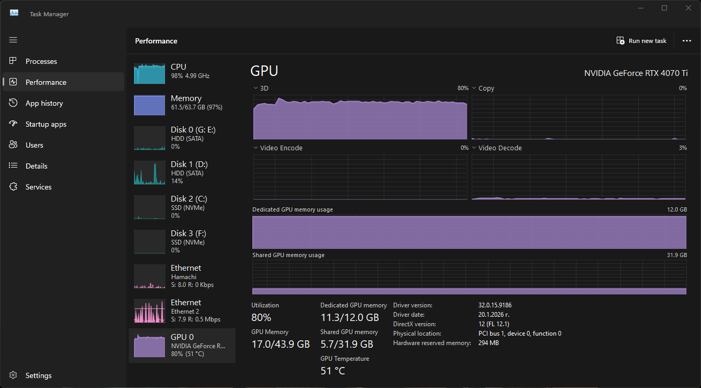